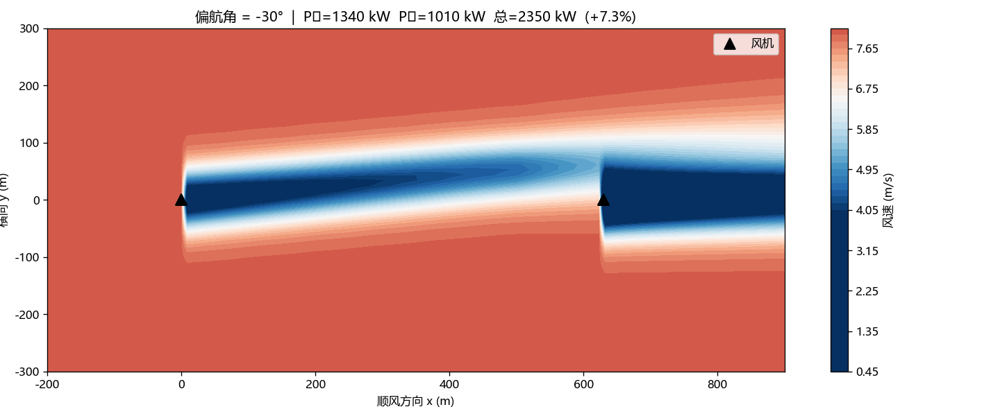

接口：predict_power(yaw, U) — 未来 PINN 替换零改动。当前为 FLORIS 插值代理。
optimizer_result.json（洪祖名结果覆盖前为 FLORIS 占位）。

偏航角扫描动画（现有）。
数据接口状态
•
•
•
•
•
• 闭环状态：数据已接入 → 插值已运行 → 优化结果待接入 → 可视化完整。
•
cases.csv：单风速(8m/s) ✅•
cases_multi.csv：多风速 ✅•
fields_3d/：3D 流场 ✅•
cases_array.csv：3×3 阵列 ✅•
surrogate_model.py：插值接口稳定，待 PINN 替换 ✅• 闭环状态：数据已接入 → 插值已运行 → 优化结果待接入 → 可视化完整。